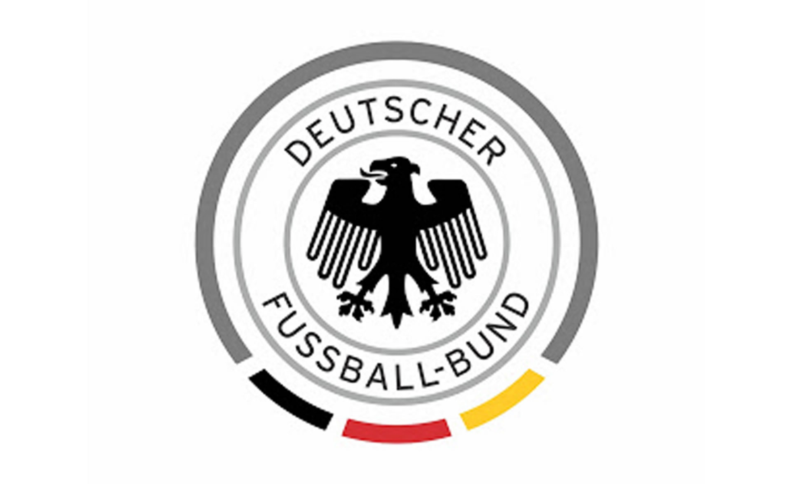

ALEMANIA
Es el segundo equipo con más certámenes disputados únicamente detrás de Brasil, ha estado presente en 19 ediciones. Cuenta con la marca del campeón mundial que más goles ha marcado en un torneo cuando en 1954 se coronó con la cifra de 25.